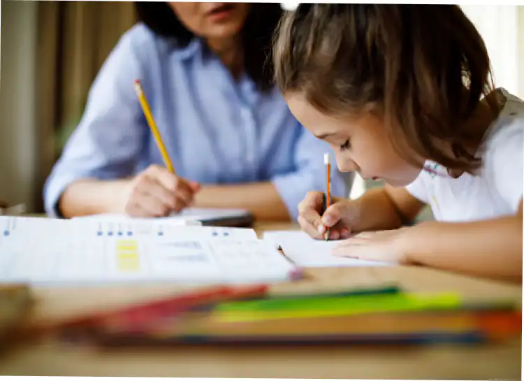

Féminisme et lutte pour l’éducation des filles dans le monde
Bien que le taux de scolarisation des filles augmente de 10 % chaque année, elles sont encore généralement considérées comme des écoles secondaires.
Introduction
Selon les données de l'UNESCO, 62 millions de filles âgées de 6 à 14 ans ont été privées de leur éducation en 2018. En fait, les filles qui ne vont pas à l'école sont trois fois plus susceptibles de se marier et de devenir mères avant l'âge de 18 ans que les filles qui ont obtenu leur diplôme d'études secondaires. Cependant, les filles d'aujourd'hui seront des femmes de demain, c'est pourquoi elles doivent être éduquées et apprendre à défendre leurs droits.
Les obstacles à l’éducation des filles
Les obstacles à l’éducation des filles sont la pauvreté et la ruralité, des traditions culturelles d’inégalité des genres, des violences à l’école et sur le chemin de l’école, les règles : par exemple sur le continent africain, 1 fille sur 10 ne va pas à l’école quand elle a ses règles parce que les tampons et serviettes hygiéniques coûtent très chers. Les mariages d’enfants (12 millions de filles chaque année) : par exemple en Afrique occidentale et centrale, 4 filles sur 10 sont mariées avant leurs 18 ans (et 1 fille sur 7 avant ses 15 ansIl y a aussi l’obstacle des grossesses précoces, l’absence d’acte de naissance, la non-application des lois et les situations d’urgences.
Moi, Malala
Le livre Moi, Malala
est dédié aux enfants dans le monde n’ayant pas accès à l’éducation, mais aussi aux professeurs qui continuent d’enseigner et à toutes les personnes qui luttent pour les droits humains fondamentaux et leur éducation.
Dans ce livre, Malala raconte que son père est le propriétaire d’une école comprenant 800 élèves divisés en trois écoles : une école primaire, une école secondaire de filles et une de garçons. C’était son rêve. Il accueillait même gratuitement plus d’une centaine d’enfants pauvres même si son école ne faisait pas vraiment de bénéfices et que beaucoup d’enfants riches partaient. L’école de filles s’appelle Khushal. Dans laquelle on portait un uniforme appelé “shalwar kamiz” composé d’un pantalon flottant blanc, d’une longue tunique bleue, avec un foulard blanc pour la tête.
Elle a reçu pleins de prix, deuxième prix d’un concours d’éloquence, quarante-cinq coupes et médailles en or, car elle a fini première à ds examens, débats ou concours.
Au Pakistan, elle n’avait pas de l’eau qui coulait de chaque robinet, elle était obligée de rapporter des bouteilles de gaz du marché pour faire chauffer l’eau.
Elle nous raconte aussi qu’elle est destinée à faire le ménage et la cuisine pour ses frères. Même si elle peut devenir médecin pour soigner les femmes comme il en manque. Cependant, elle ne pourrait pas devenir juristes, ingénieurs, stylistes, artistes ou ce qu’elle rêve.
Elle n’a pas le droit de sortir de chez elle sans qu’un parent de sexe masculin l’accompagne.
Une des coutumes du Pakistan est de se réjouir de la naissance d’un garçon plus que celle d’une fille. Cependant, Malala est la prunelle des yeux de son père, ce qui est rare. Le premier nom féminin a figuré dans l’arbre généalogique depuis 300 ans est le sien.
Elle a appris à lire à 5 ans ce qui fit la fierté de son père.
Les femmes du village doivent se couvrir le visage quand elle sorte de chez elle.
Aucune ne sait lire. La mère de Malala vient du village et ne sait pas lire, car elles ne vont pas à l’école. C’est rare qu’une femme au Pakistan ne soit pas analphabète. Les cousines de Malala ne vont pas à l’école et beaucoup de filles du village. Elles seront mariées très jeunes.
Sous la présence des Talibans beaucoup de filles ont quitté l’école, celles qui y vont encore sont perçues comme de mauvaises musulmanes et menacer d’aller en enfer.